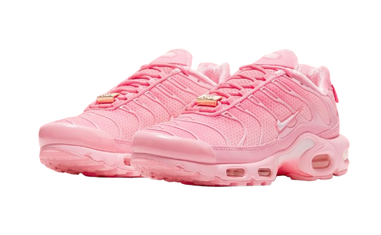

O Nike Air Max Atlanta é uma edição especial dentro da icônica linha Air Max, criada para homenagear a cidade de Atlanta, um dos grandes centros culturais e esportivos dos Estados Unidos. Lançado como parte da coleção "City Pack", o modelo destaca-se por seu design exclusivo e referências à rica herança sulista da cidade. Inspirado pelas cores vibrantes e pela energia urbana de Atlanta, o tênis traz detalhes únicos que remetem à estética da cidade. Em algumas edições, é possível encontrar o nome "ATL" bordado ou estampado na parte traseira ou lateral, destacando o orgulho regional. A escolha das cores muitas vezes remete ao espírito jovem e ousado de Atlanta, com tons quentes como vermelho, laranja e dourado. Além do visual marcante, o Air Max Atlanta mantém todas as qualidades da linha Air Max, como o conforto proporcionado pela tecnologia de amortecimento Air e o design robusto, ideal tanto para o uso casual quanto para colecionadores. Esse modelo rapidamente se tornou objeto de desejo entre fãs de sneakers e apaixonados por cultura streetwear, especialmente aqueles com conexão à cidade ou que apreciam modelos com forte identidade cultural.
